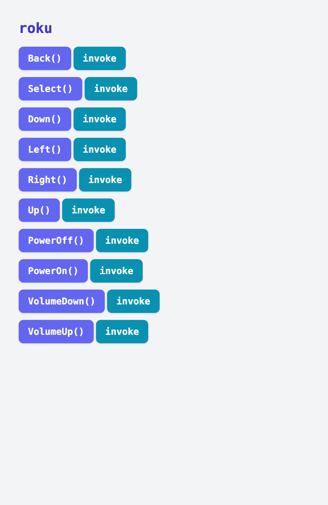

Roku TV Remote with apylaas
Roku TVs ship with a rather extensive “External Control Protocol” anyone with a routable connection to the TV do basically anything via HTTP requests. For most, your TV will be on your local network with an IP address of something like 192.168.0.100. curl can show off a basic use of the ECP:
# turn off the TV
curl -X POST 192.168.0.100:8060/keypress/PowerOff
There are plenty of other keypresses that can also be sent. While there are plenty of Roku iOS and Android apps and even a first party web remote, apylaas makes it easy to implement a custom simple interface that can be hosted on a web server and accessed from anything with a browser. It’s not the best or most complete interface, but it’s something simple that can be understood end-to-end and also works as a nice demo of apylaas.
First, ensure apylaas is installed:
python -m pip install git+https://github.com/goatmobile/apylaas.git
apylaas -h
Next we need a Python file that implements the functionality. Here that will be a set of keypresses for common things (e.g. the D-pad, on/off, volume, play/select).
import apylaas
import requests
TV_IP = "192.168.1.152:8060"
def _make_request_method(key):
"""
Generate a function that presses 'key' on a Roku TV
"""
def fn():
requests.post(f"http://{TV_IP}/keypress/{key}")
fn.__name__ = key
return fn
keys = [
("PowerOn", "power", 0),
("PowerOff", "power", 0),
("Up", "dpad", 1),
("Down", "dpad", 1),
("Right", "dpad", 1),
("Left", "dpad", 1),
("VolumeUp", "vol", 2),
("VolumeDown", "vol", 2),
("Select", "action", 3),
("Back", "action", 3),
]
# For each of the key presses above, create a function for them in the local
# module scope. These will all get scooped by apylaas to generate a web UI
for key, group, priority in keys:
locals()[key] = apylaas.group(group, group_priority=priority)(
_make_request_method(key)
)
Then run apylaas and tell it about that module.
apylaas --ignore-hidden --no-reload --library roku.py
Visit localhost:5000 and click some buttons to see it run! Functions with no parameters can be called directly from the index page with the “invoke” button.

P.S. I find it nice to wrap it all up in a Dockerfile so it integrates into my local deployment stack.
FROM python:3.11.2-alpine3.17
WORKDIR /opt/apylaas
RUN apk add git
RUN python3 -m pip install requests
RUN python3 -m pip install git+https://github.com/goatmobile/apylaas.git
COPY roku.py roku.py
ENTRYPOINT ["apylaas", "--library", "roku.py", "--ignore-hidden", "--no-reload"]
then
docker build . --tag roku:local